Find your sound. Make yourself at home.
A practical guide to FluidEQ, illustrated with real app captures. Start with your first listening session, then explore each part of the app at your own pace.
30 chapters · 42 real interface captures · OfflineIn FluidEQ: Help → User guide, or press F1.
Real captures of the FluidEQ window. Colours, labels and control positions may differ in your version. Example settings are illustrations, not recommended presets.
Your first five minutes
Start with a familiar song at a comfortable volume. The left rail switches FluidEQ on and holds the preamp; the centre is your workspace; the right rail follows your output and its profiles. The bar at the foot of the window controls whatever is playing.

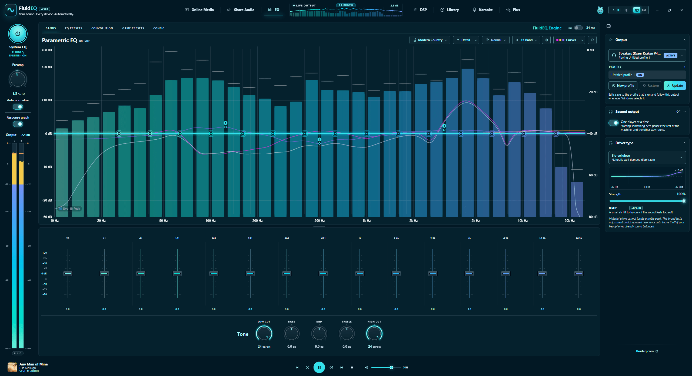
Try it
- Install FluidEQ and keep the FluidEQ Engine selected when setup asks how to process your sound. Windows asks for permission once, with no restart.
- Choose your listening device under Output device. Turn on System EQ and leave Auto normalize on.
- Play a song, open EQ → Bands, make a small change, and compare with System EQ off and on.
Around the window
The header takes you between FluidEQ’s pages and shows the sound as it plays. The left rail holds the switch for the whole EQ, the preamp and the level meter; the right rail follows your output and its profiles.
The header, up to the signal

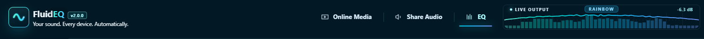
- 1Online MediaYouTube, YouTube Music, Bandcamp, Twitch and Suno, played inside FluidEQ with your EQ on them.
- 2Share AudioSends this computer’s sound to another one, or plays another one’s here.
- 3EQYour bands, presets, headphone correction, game presets and the engine’s config.
- 4Audio signalWhat is playing, as it plays, with its peak level. Colourful, at its top, turns Colourful mode on or off; the graph’s View menu can hide it.
The header, after the signal

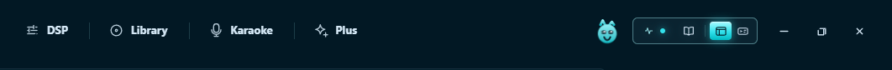
- 1DSPThe effects rack: presets, the Room and every stage of the chain.
- 2LibraryYour music files, albums and play queue.
- 3KaraokeSing along, and make karaoke out of your own songs.
- 4VisualizersVisualizers, the gallery, the Studio and Dynamic lighting.
- 5Support the workWays to support the work on FluidEQ.
- 6FluidEQ actionsThe engine, your account, importing EQ settings, restarting Windows audio, Processes and Reset all settings; Brightness, Tint, Colourful mode and Tint app icon, the EQ sliders, animations, Start with Windows and the language.
- 7HelpThis guide, What’s new, the audio troubleshooter and Report a problem.
The left rail
- 1System EQTurns FluidEQ’s processing on or off for everything the PC plays.
- 2PreampLowers the level before the EQ so boosts have room. Auto normalize sets it for you.
- 3Auto normalizeKeeps the preamp just low enough that nothing you boost can clip.
- 4Response graphShows or hides the response graph.
- 5Level meterThe output level, left and right, in real decibels. Press it to change its style.
Try it
- Press a page in the header: Online Media, Share Audio and EQ before the signal, DSP, Library, Karaoke and Visualizers after it.
- Turn System EQ on in the left rail and leave Auto normalize on, so no boost can clip.
- Press the level meter to change how it is drawn, and Colourful on the signal to have the bands, the title and the lit controls in a palette instead of one colour.
The Compact player
One switch turns FluidEQ’s window into the Compact player, a single narrow column: a visualizer at the top with the song over it and the play controls under it, then Sound, your equaliser, then Up next and your playlists. Whatever is playing keeps playing, and the same switch brings the full app back on the page you left.
The top: the song, and how it plays

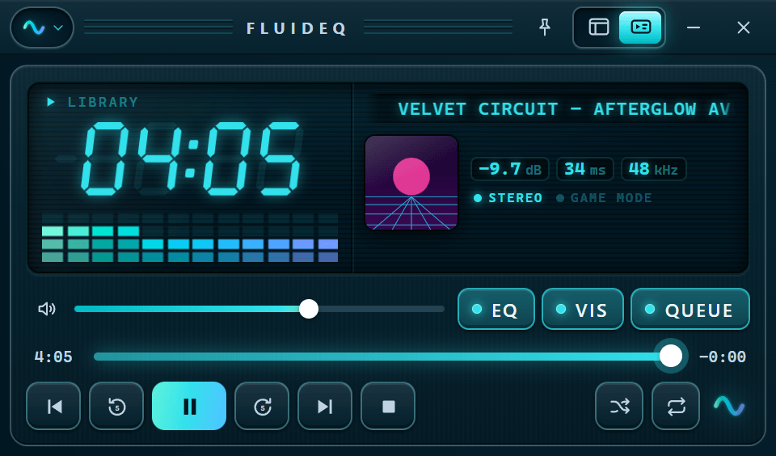
- 1Player menuBack to the full app or to one of its pages; the player’s own Brightness, Transparency or Tint, a scene’s Daylight, Colourful mode, Tint app icon and the EQ sliders; Always on top and Fold to one line.
- 2Always on topKeeps the player above every other window.
- 3Compact playerBack to the full app, on the page you left.
- 4Full screenFills the screen with the visualizer. Double-clicking the picture does the same, and Escape gives the screen back.
- 5SourceWhere the song is coming from: the Library, Online Media, Karaoke, another computer or another program on this PC. Pressing it opens that page in the full app.
- 6Output levelThe level of the sound leaving FluidEQ, in decibels.
- 7Add to FavouritesAdds a song from the Library to your Favourites, or takes it out.
- 8Position in the songWhere the song is. Drag to jump.
- 9Play controlsPrevious, back five seconds, play or pause, forward five seconds, next and stop.
- 10System volumeYour computer’s volume, the same as in Windows: it sets the level of everything the computer plays.
- 11Shuffle and repeatShuffles Up Next, and repeats nothing, everything or this song.
- 12LookThe style or scene the visualizer is drawing. Press it to choose from all of them.
Sound, your equaliser

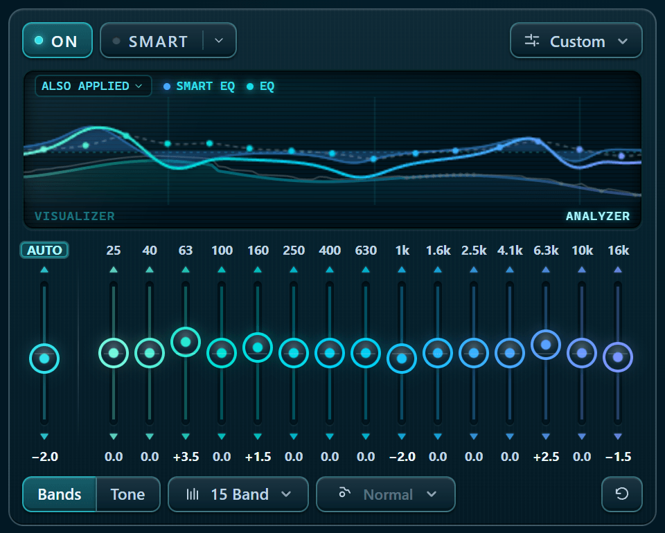
- 1SoundFolds the sound controls down to this row, which keeps the preset, Smart EQ and the switch at hand, and opens them again.
- 2PresetsA ready-made chain for the sound, such as Music or a genre. None leaves only your own bands.
- 3Smart EQListens to what plays and corrects it: Detail, Balance or Target.
- 4System EQTurns FluidEQ’s processing on or off for everything the PC plays.
- 5ToneTone shows the Bass, Mid and Treble dials; the tab beside it, every band.
- 6PreampLowers the level before the EQ so boosts have room. Auto normalize sets it for you.
- 7BandsDrag a band up or down to boost or cut it. Its frequency is written under it.
- 8Quick layoutsBand counts, each starting every band at one Q, and the band designs you saved.
- 9EQ modeOpens EQ mode: how strongly your EQ and the curves apply, their band Q, phase and treble.
- 10Clear EQSets every gain to 0 dB and keeps your bands. Asks first.
Up next

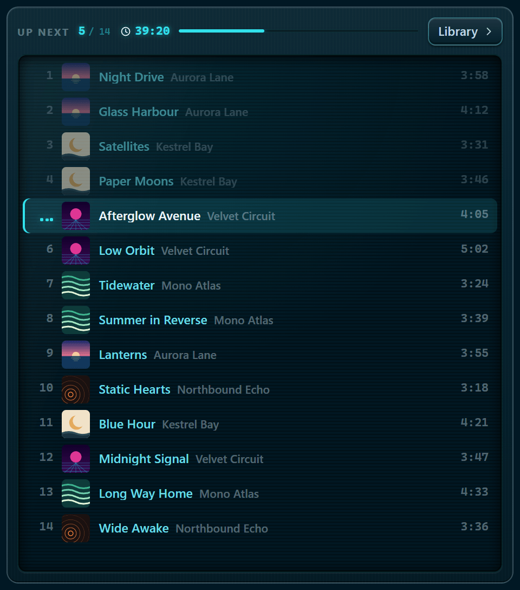
- 1Up nextUp next and Playlists, each with how many it holds, and the time left in the queue.
- 2Save as playlistKeeps Up next as a playlist of its own.
- 3Fold the queueFolds Up next and Playlists down to their tabs, and the visualizer takes the room.
- 4The songsWhat plays next. Click a song to play it, drag it to move it, or drop music files here to add them where you let go.
- 5Remove from the queueTakes a song that has not played yet out of Up next.
- 6OutputWhere the sound is going: the output Windows plays through.
- 7EngineWhich engine is shaping the sound, lit while FluidEQ is on.
The player’s menu

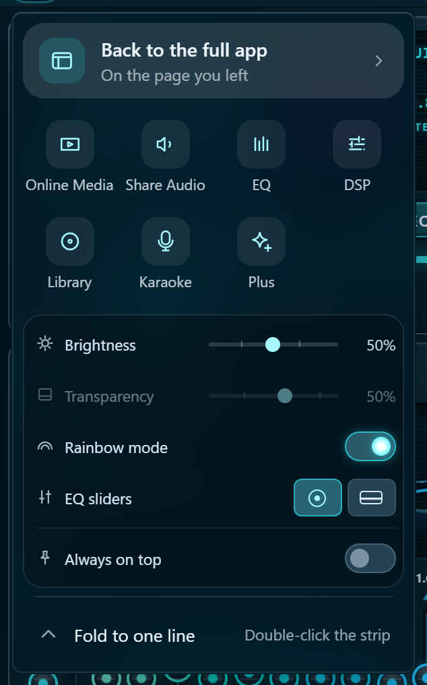
- 1Back to the full appBack to the full app, on the page you left.
- 2Open in the full appOpens the full app on one of its pages.
- 3BrightnessThe player’s own Brightness, apart from the full app’s; Transparency over a scene, or the window’s Tint over a standard style; a scene’s Daylight; Colourful mode; and Tint app icon, off at first, for the taskbar icon, the tray icon and the icon in the tray’s menu in the window’s colours.
- 4EQ slidersRound handles or rectangular caps on the EQ’s sliders, here and on the EQ page.
- 5Always on topKeeps the player above every other window.
- 6Fold to one lineFolds the player to one line.
Folded to one line

- 1UnfoldUnfolds the player. The arrow at the other end does too.
- 2PlayPlay or pause.
- 3Time played or time leftTime played. Click it for the time left.
- 4Position in the songWhere the song is. Drag to jump.
Try it
- Press the Compact player switch in the title bar, beside Help. On the player, the same switch brings the full app back.
- Fold Sound, or Up next and Playlists, down to its header, and the visualizer takes the room; press the header to open it again. Drag the player’s top or bottom edge to make it taller or shorter.
- Double-click the visualizer to fill the screen with it; Escape gives it back. Press the look’s name beside shuffle and repeat to choose from every style and scene.
- Choose Fold to one line in the FluidEQ mark’s menu to fold the player down to one line; the mark unfolds it.
- In the same menu, set the player’s own Brightness, the Transparency over a scene or the window’s Tint over a standard style, and a scene’s Daylight. Always on top, there or in the header, keeps it above other windows.
- Drop music files anywhere on the player: they join the Library and the end of Up next or, over the list, the place where you let go.
What your PC needs
FluidEQ runs on any Windows PC of the last ten years. Two parts ask for more than the rest: the scenes draw on the graphics card, and the karaoke AI downloads its models the first time you use it.
Try it
- Check your Windows: Windows 10 version 1803 or later, or Windows 11, 64-bit, 4 GB of memory and about 600 MB of disk. Processing everything the PC plays needs the FluidEQ Engine or Equalizer APO, and Windows asks for permission once while it installs.
- Look at a visualizer: any graphics card or built-in graphics from 2013 onwards. At 1080p built-in graphics are enough; 4K, or a desktop background on several screens at once, is happier with a dedicated card. On a busy card FluidEQ draws the scene smaller and lets go of the ones you cannot see.
- Try the karaoke AI: separating a voice downloads a 713 MB model the first time, the pitch model adds about 360 MB, and noise removal 11 MB. With a DirectX 12 graphics card a four-minute song separates in around half a minute; on the processor alone it takes about four minutes. Keep 2 GB of memory free while it works.
- Aim for this if you can: Windows 11, 8 GB of memory, graphics from 2018 onwards, and 3 GB of disk free if you use the AI features.
The FluidEQ Engine
FluidEQ processes your sound with its own engine or with Equalizer APO. The FluidEQ Engine runs inside Windows' audio service after your sound card's effects, brings your EQ and the DSP rack to everything the PC plays, and steps aside the moment FluidEQ closes.
- 1FluidEQ EngineRecommended. Your sound card's effects keep working, and the EQ and DSP rack reach every app.
- 2Equalizer APORuns custom APO commands, Peace and VST plugins. The DSP rack stays with Library playback.
- 3ApplySwitches the engine. Windows asks once, and audio restarts for a few seconds.
Try it
- Open the actions menu — the pulse button at the top right — and press the engine card at the top of it.
- Choose FluidEQ Engine and press Apply. Windows asks for permission, and audio pauses for a few seconds while it restarts.
- If an output shows OFF, press Enable on its notice. If a notice says the engine is not running, press Restart Windows audio.
Shape your sound with EQ
Frequency chooses where a band acts, Gain sets the boost or cut, and Q sets its width: higher Q is narrower. With no band selected, the Tone dials — Bass, Mid and Treble, with Low cut and High cut on either side — shape the sound as a curve of their own and leave your bands as they are. Begin with small, broad changes and compare often.
The Bands page, nothing selected
- 1PresetsA ready-made chain for the sound, such as Music or a genre. None leaves only your own bands.
- 2Smart EQListens to what plays and corrects it: Detail, Balance or Target.
- 3EQ modeBrings the EQ mode card into view: how strongly your EQ and curves apply, band Q, phase and treble.
- 4Quick layoutsBand counts, each starting every band at one Q, and the band designs you saved.
- 5Add bandAdds a band beside the selected one, at the Q of the bands already there.
- 6CurvesWhat else shapes this output — a headphone correction, Smart EQ, a convolution — each with its strength, its switch and ×.
- 7Clear EQSets every gain to 0 dB and keeps your bands. Asks first.
- 8Band labelIts frequency, Q and gain, above or below its point. View → Show EQ labels, or Ctrl+W.
- 9A bandDrag its point to boost or cut, or step it with the arrow keys. Click its frequency to select it.
- 10BassRaises or lowers the low end of the whole curve.
- 11MidRaises or lowers the middle, where voices sit.
- 12TrebleRaises or lowers the top, the air and the detail.
A band selected
- 1Game modeCuts the delay FluidEQ adds, for games and calls. Gaming presets turn it on.
- 2Selected bandThe band being edited. Ctrl-click or Shift-click to select several.
- 3FilterIts shape: a peak, a shelf, a notch or a pass filter.
- 4FrequencyWhere the selected band acts, from 1 Hz to 20 kHz.
- 5GainHow much it boosts or cuts. Ctrl-click returns it to 0 dB.
- 6Quality (Q)How wide it is: higher is narrower.
- 7ActiveTakes the band out of the sound and keeps its settings.
- 8Delete bandPress twice to delete the band; Keep changes your mind.
A band's right-click menu
- 1Reset bandGain back to 0 dB and Q back to 2.
- 2Disable bandTakes the band out of the sound and keeps its settings.
- 3Add band to the leftAdds a band halfway to its lower neighbour.
- 4Add band to the rightAdds a band halfway to its higher neighbour.
Try it
- Open EQ → Bands. With nothing selected, turn Bass, Mid or Treble for a quick change of tone, and Low cut or High cut to trim the extremes. They draw their own Tone line on the graph.
- Click a band’s frequency, or its point on the graph, to select it. Turn its Frequency, Gain and Quality (Q) dials, pick a Filter, or switch it off with Active. The curve follows a slider as you move it.
- Everything works from the keyboard too: Tab to a fader, a dial or a point on the graph, and the arrow keys step it; Page Up and Page Down take bigger steps.
- To see each band’s frequency, Q and gain on the graph, open View above it and press Show EQ labels, or press Ctrl+W until it shows Everything. A label sits above or below its point, never beside it, and goes back to its place once there is room.
- Right-click a band to reset it, switch it off, or add a band beside it. Press Clear EQ to set every gain, and Bass, Mid and Treble, to 0 dB while keeping your bands. It asks first.
- The same menu has Delete band, which asks for a second press before it deletes. Left + right turns a band into one band for each ear, at the same frequency, so you can move each by itself: the left ear’s curve is drawn solid and the right’s dashed. Both ears joins the two again in their middle, and so do Reset band and Clear EQ.
EQ mode and band designs
EQ mode changes how your sound is shaped, without editing anything. Its settings are the first card of the side panel on the EQ page, beside the curves they change, in two tabs: Your EQ covers your bands, the Tone, presets, Driver type and Smart EQ; Corrections covers headphone corrections and imported or custom curves. Band designs keep the frequencies and Q of a layout you like, ready for any output.
The EQ mode card
- 1Put back in the menuPuts these settings back in a menu over the graph. The menu’s pin brings the card back.
- 2Your EQ and CorrectionsTwo tabs, each with its own settings.
- 3StrengthNormal, Studio ×1.5 or ×2. Each tab keeps its own.
- 4Band QConstant keeps each Q; Proportional and Asymmetric narrow bands as they grow. On Your EQ it shapes your own bands alone, never a preset or a correction.
- 5PhaseMinimum or Linear, for each tab. With the FluidEQ Engine only.
- 6TreblePrecise plays treble as drawn; Classic as Equalizer APO does. With the FluidEQ Engine only.
- 7Curve smoothingSoftens sampled correction curves at 1/12 or 1/3 octave. Off until you choose.
- 8ResetEverything back to Normal, and Curve smoothing back to Off.
Band designs
- 1Built-in layoutsStandard layouts of 6, 10, 15, 20 or 31 bands.
- 2Save design…Names the current frequencies and Q as a design, listed under My designs.
Try it
- Press EQ mode above the graph. The card comes into view, and the side panel opens if it was closed.
- Pick the Your EQ or Corrections tab, then try a Strength or Band Q choice while music plays. Under the FluidEQ Engine, choose Minimum or Linear phase, and Precise or Classic treble, for each tab.
- On Corrections, Curve smoothing can soften sampled curves at 1/12 or 1/3 octave; it is Off until you choose. Reset puts everything back to Normal, and smoothing back to Off.
- Would you rather have a menu? Press the pin on the card: EQ mode then opens as a menu over the graph, and the pin in that menu brings the card back.
- Open the layouts button beside Add band. Pick 6, 10, 15, 20 or 31 bands, or press Save design… to name the current layout.
Game presets
Give each game its own sound. When the game comes to the front, FluidEQ switches to that sound and keeps it until you close the game, whatever you alt-tab to in between. Then it puts back what you had.
- 1Game presetsYour games and the sound each one gets.
- 2Add a gameAdds a game from Steam, Epic, EA, GOG, Ubisoft, Battle.net or Xbox, or any program that is open now.
- 3A gameThe game, and the folder FluidEQ knows it by.
- 4Its soundThe sound FluidEQ switches to when this game comes to the front, or Leave it as it is.
- 5RemoveForgets the game. The preset it used stays.
Try it
- Open EQ → Game presets and press Add a game. Pick one from your launchers, a program that is open now, or choose its program yourself.
- Pick the sound it should get in the picker on its row: a Gaming preset, or any other.
- Start the game. A card on the desktop says what FluidEQ switched to, and another says what came back when you close it.
Headphone correction & imports
A headphone correction compensates for a measured model. It is a starting point you can combine with your own bands and presets. Check the exact model and the measurement author before applying a result.

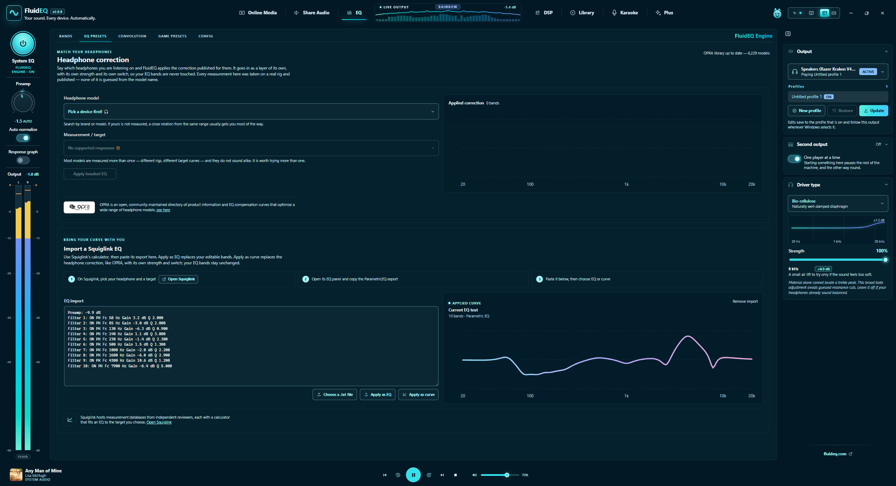
Try it
- Open EQ → EQ presets and search for your headphone model. Review the available measurements and choose the matching entry.
- For EQ text from another tool, use Import EQ settings in the actions menu. Review the parsed bands and curve before applying.
- For Squiglink, open My curves and choose Import from Squiglink. Paste its export and review the live curve preview. Save to My curves keeps it for later; Save and apply also uses it as a headphone correction. Apply to editable EQ instead replaces your bands after confirmation.
- My curves is your own list beside the OPRA library: Add curve takes a Squiglink export, a .txt file, your EQ as it is now or an OPRA pick. Each curve has Apply as curve and Apply as EQ, and its menu renames it, edits its bands, duplicates it, copies it as text or deletes it. Export list and Import list carry the whole list to another computer.
- Import into, beside Apply as EQ, picks Both ears, Left ear or Right ear: one ear replaces only that ear’s bands and leaves the other ear as it was.
Use an impulse response
Convolution applies a WAV impulse response as another correction layer. FluidEQ includes a searchable AutoEq catalogue and can import your own WAV. It remains separate from the editable parametric bands.

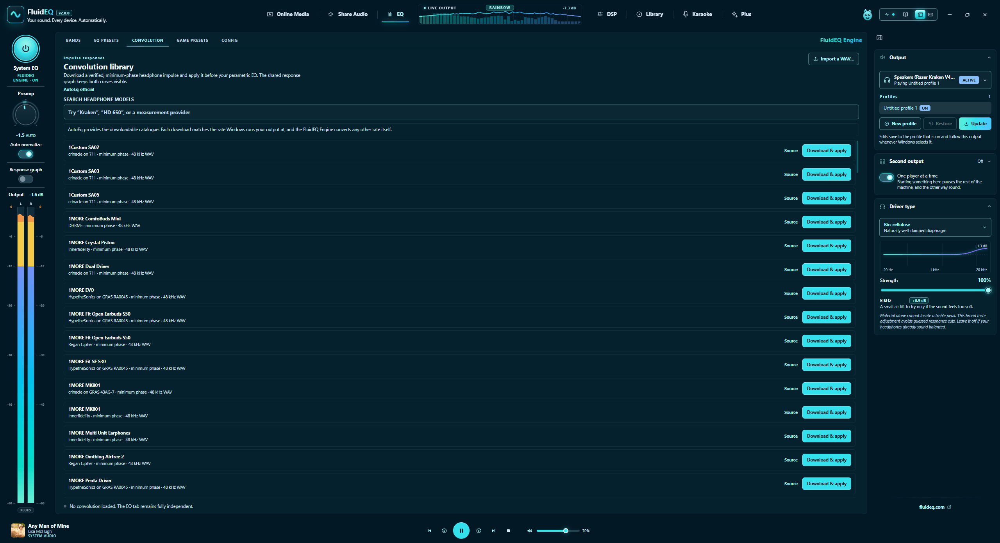
Try it
- Open EQ → Convolution. Search by model or measurement author.
- Check the source, then use Download & apply; the download matches your output’s rate. Use Import a WAV for a file you already have.
- Listen with the convolution layer on and off in Curves.
Devices, profiles & second output
Every output keeps its own sound: the EQ, the preset, the Tone, the cuts, the DSP rack, the Room and the leveling are saved with it and come back the moment you switch to it. Profiles keep other sounds for the same output. Second output plays on another device at the same time, with a sound and a level of its own.
- 1EQ modeEQ mode’s settings, first on the EQ page. Fold the card to keep it out of the way.
- 2Output deviceThe output you are listening on, with its battery for Bluetooth headphones. OFF means your EQ does not reach it; ACTIVE, that Windows is playing through it.
- 3ProfilesSounds you saved. ON marks the one this output uses; press another to switch.
- 4New profileStarts a new profile from the EQ you have now.
- 5UpdateSaves your changes into the profile you are on. Restore, beside it, brings the profile back as you last saved it.
- 6Remember each song’s soundBrings back a song’s preset, Tone and EQ whenever it plays here. Off until you switch it on.
- 7One player at a timeStarting something in FluidEQ pauses what plays elsewhere on the PC, and the other way round.
- 8Second outputYour other outputs. Switch one on to play there too, with its own sound, level and delay in milliseconds.
- 9Edit soundEdits that output’s sound on the EQ page without switching the main output.
- 10Driver typeA gentle starting point for what you listen on — headphones, earphones, a driver size or material. Leave it at No compensation if the sound is already right.
Try it
- Check the output at the top of the Output card before editing; Bluetooth headphones show their battery beside it. Use New profile for a sound you want to keep; Update saves changes to that profile, and Restore brings its saved settings back.
- Switch on Remember each song’s sound, and the preset, Tone and EQ you set during a song come back whenever that song plays here. A notice says so, with Undo and Forget this song.
- Open Second output, switch on a device and set its level. Choose its profile beneath it, or press Edit sound to change its sound on the EQ page without switching the main output; Done or Edit main takes you back.
- Each second output keeps itself in time and shows its delay in milliseconds; with Share Audio, another computer’s sound shows its own delay, the network included.
Inspect & back up a chain
EQ → Config shows what the audio engine actually has on disk. The output cards and include tree help you see which device and layers are involved. Export a chain before a large experiment or when moving a setup.

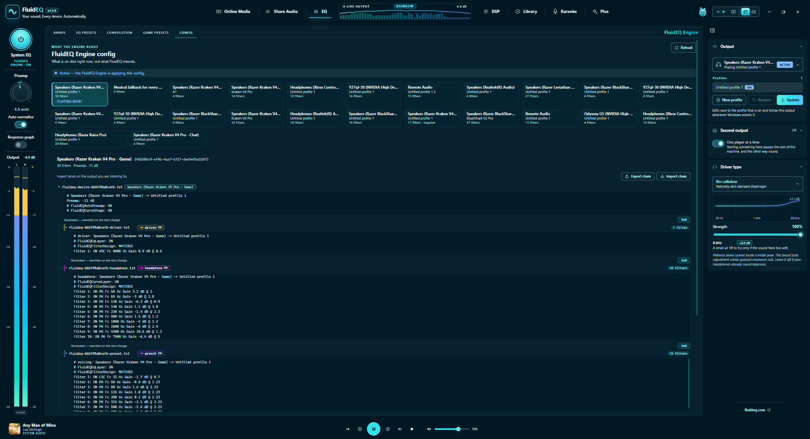
Try it
- Open EQ → Config and choose the output you want to inspect. Read its status and active layers.
- Use Export chain to save a .fluideq file. Keep a copy somewhere you can find again.
- To bring a chain back, select the intended output first, then use Import chain and review the result.
Explore the DSP rack
The DSP rack is a chain of studio stages. Under the FluidEQ Engine it processes everything the PC plays; under Equalizer APO it processes Library audio tracks. It is off while FluidEQ is switched off.
- 1PresetsWhole-rack chains for genres, devices and repairs.
- 2Game modeCuts the delay FluidEQ adds, for games and calls. Gaming presets turn it on.
- 3NormalizerEvens out loudness. On live audio it levels song by song.
- 4DenoiseRepairs hiss, hum and clicks. The neural voice cleaner works on Library tracks.
- 5ExciterAdds harmonics for body and air.
- 6Bass ForgeAdds a real octave below the bass, or its harmonics for small speakers.
- 7EqualiserFifteen parametric bands, with minimum or linear phase.
- 8Bass PunchShapes the attack, sustain and bloom of the bass.
- 9DimensionWidens the stereo picture without changing the mono sum.
- 10RoomSurround on headphones: each channel becomes a speaker in a room around you.
- 11MaximizerRaises the level without letting peaks pass the ceiling.
- 12MasterFinal level, loudness target and peak safety.
- 13CrossfadeBlends one Library track into the next.
Try it
- Open DSP. Pick a chain under Presets, or select a stage in the rail and switch it On.
- Change one control at a time and compare with the stage bypassed at a similar volume. Isolate lets you hear only what a stage adds.
- Save a rack you like, and use Export and Import to share it.
- The De-esser turns down the sharp S, T and SH of a voice only while they sound, and leaves cymbals alone; Speech, Podcast and Audiobook switch it on. Every stage can keep profiles of your own: set it, then press Save.
The Room: surround on headphones
The Room turns headphones into a listening room. Every channel of the sound becomes a speaker standing around your head, rendered through a measured head and the reflections of a room you shape yourself, so a film sits in front of you and a game surrounds you. It needs the FluidEQ Engine and headphones; on speakers it does nothing useful.
- 1Room presetThe rooms to start from, grouped like every other stage's profiles; Custom once you shape one.
- 2SaveName the room as it stands; it comes back with a press.
- 3What the room is doingRead from the engine: which speakers the playing stream reaches, or why the room is idle.
- 4The room from aboveThe room from above: walls that fade as they absorb, the speakers on their ring, the head in the middle. All of it is drawn to one scale, so a speaker standing further out than the room is wide is drawn outside its walls. Drag one and its pair moves with it; hold Shift to move it alone.
- 5The chosen speakerPress a speaker in the room and this pane becomes its own: its angle as a number, its own distance, its level, and Mute or Solo to hear it alone.
- 6Space, Ambience, DistanceHow much of the walls you hear, the soft tail after them, and how far the speakers stand. Size, Walls and the tail's own length and tone are in Room character below.
- 7Start the listening testFive listening pairs that pick the head for your ears.
- 8HeadThe measured head the room renders through: small, medium or large.
Try it
- Open DSP, choose Room in the rail and switch it on. Stereo becomes two speakers in front of you; a 5.1 film five and the sub; a 7.1 game the whole ring. The chip beside the switch says which.
- Pick a room at the top — studio, living room, cinema, concert hall and more — or turn Size, Walls and Distance yourself and drag a speaker around the ring. Speakers the playing stream cannot reach are drawn asleep.
- Press Start the listening test and answer five short listening pairs: the room takes the head that puts sounds in front of you. Small, Medium and Large can be chosen by hand too.
- Save a room you like under a name; a saved room comes back with a press and never changes your head.
Denoise & source analysis
Denoise reduces hiss, mains hum and clicks. Under the FluidEQ Engine it works live on anything the PC plays; the neural voice cleaner and the scanned noise floor are for Library tracks. Stronger reduction is not automatically better.

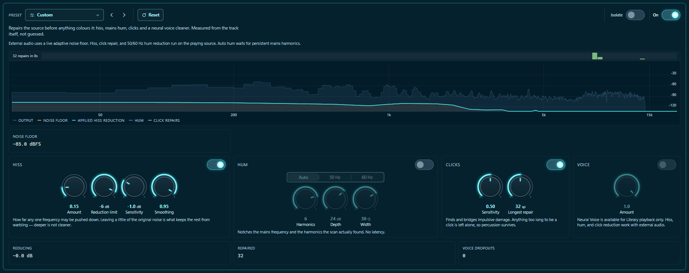
Try it
- Play something with the noise you want to reduce and select Denoise in DSP.
- Switch on Hiss, Hum or Clicks with a light setting, and listen to quiet passages and to musical detail.
- Increase reduction gradually, then bypass the stage to check that the improvement is worth any loss of detail.
The graph and its controls
The response graph draws your EQ curves over the live sound. The strip above it chooses what is drawn and how, and it changes with the look: a standard style or a scene.
With a standard style
- 1Live outputShows or hides the live wave.
- 2Previous styleSteps back to the previous look.
- 3Styles and visualizersOpens every style and visualizer.
- 4Next styleSteps forward to the next look.
- 5AutoChanges the look every 10 seconds to 2 minutes.
- 6ColouringColours the style: Auto, Flat, Frequency, Level or Heat.
- 7New lookDesigns a look of your own from this style.
- 8Listening bandsShades the bands you hear most.
- 9GridShows or hides the grid and scales.
- 10ViewSize, what is drawn, and the wave.
With a scene
- 1LikeLikes the scene playing, which gives its maker points. On a scene of your own it shows how many likes it has.
- 2Window coloursThe app's theme, the visualizer's colours, its colours with light (Ambient), or the visualizer behind the whole window (Backdrop).
- 3Dynamic lightingLights your RGB devices with this scene.
- 4Set as desktop backgroundPuts this visualizer behind your desktop icons.
The View menu
- 1Expand viewCtrl+SThe graph grows over the editor.
- 2Full screenCtrl+FThe graph fills the screen.
- 3ShowingCtrl+WSteps through what the graph shows, band labels included.
- 4EQ labelsEach band’s frequency, Q and gain over its point.
- 5The waveThe live spectrum drawing.
- 6Top waveThe small wave in the title bar.
- 7GridCtrl+GShows or hides the grid and scales.
- 8Listening bandsThe same shading; greyed over a scene, which never draws it.
- 9How it is drawnFrame rate, resolution and smoothing, kept apart for standard styles and scenes.
- 10Level meterThe output meter in the left rail.
- 11Wave heightHow tall the wave is drawn.
- 12Wave positionFrom the bottom edge up to the middle.
- 13Next styleSpaceSteps forward to the next look.
- 14Previous styleCtrl+SpaceSteps back to the previous look.
Try it
- Click the look’s name to choose a style or scene. The arrows beside it, Space and Ctrl+Space step through them.
- Open View for the graph’s size, what it shows, and the wave’s height and position. Show EQ labels writes each band’s frequency, Q and gain over its point. How it is drawn sets the frame rate — every frame your display offers, or 60 or 30, held at 60 on battery — and the resolution and smoothing; standard styles keep their own choices, apart from scenes.
- A scene adds its own controls to View — whatever its author left for you to set — and Use its own wave puts the wave back to the height and position that author chose.
- Double-click the plot for full screen, or Ctrl+double-click to expand it over the window; double-click again to come back. A single click hides or shows the strip.
- Keys: Ctrl+F full screen, Ctrl+S expanded, Esc back to the normal view, Ctrl+G the grid, Ctrl+W what the graph shows, band labels included, Ctrl+I which way the wave faces, Ctrl+A every band. On a band’s point, drag to move it, use the arrow keys to step it, and right-click for its menu; Ctrl+scroll changes the Q of a selected point.
Styles and scenes
Standard styles are free drawings of the live sound that you can colour and design yourself: Line and Area for a clean trace, LED blocks and Spikes for punch, Truss, Skyline and Dancing flames for whole scenes. Scenes are living pictures drawn on the graphics card, such as Alpine, Aurora, Bloom and Neon City, where the bass, the beat and the treble each move something different.

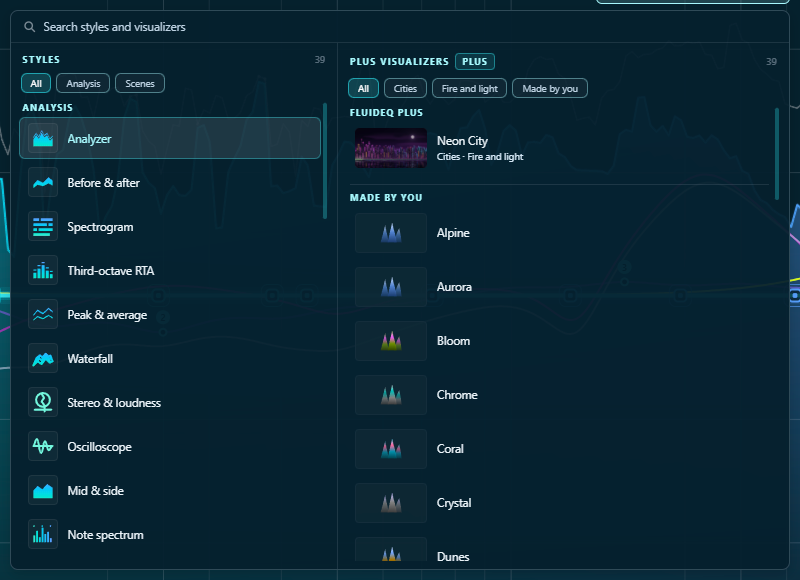
- 1SearchFinds styles and visualizers by name, maker or category.
- 2StylesFree styles drawn by FluidEQ, and the looks you saved.
- 3Style filtersAnalysis and Scenes, and Yours once you have saved a look.
- 4VisualizersScenes from FluidEQ and from members, and your own under Made by you.
- 5CategoriesNature, Cities, Abstract and more.
Try it
- Click the look’s name on the graph. Search, or filter the styles by Lines, Fills, Bars, Points or Scenes.
- Choose a scene on the right. One that is not yours yet is locked, and choosing it explains how to get it.
- On a standard style, press New look to change its colours, motion and peaks, then save it; it appears under Yours.
Your account, credits and the Visualizers tab
An account is optional: everything that was free runs on this computer without one. Signed in, the Visualizers tab holds the Gallery, the Studio, Dynamic lighting and the desktop visualizer. A scene from the Gallery costs one credit and is yours for good; a confirmed account gets some credits free, and packs of credits are paid once.

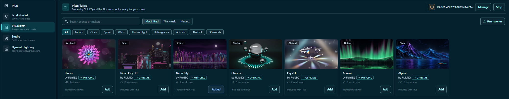
- 1GalleryScenes by FluidEQ and members, ready for your music.
- 2StudioMake your own scenes with your AI.
- 3Dynamic lightingYour RGB devices follow the scene.
- 4Collapse the sidebarFolds the rail to its pictures; it opens again on hover.
Try it
- Open Account in the actions menu. Sign in, or create an account and type the six-digit code sent to your email.
- Open the Visualizers tab and choose Gallery. Open a scene, watch it, and press Get to spend a credit on it.
- For more credits, open Account and choose a pack. It is paid once on Stripe, in your browser.
The Visualizers gallery
Visualizers holds FluidEQ’s own scenes and the ones members publish. Any account can browse them and watch any scene for ten seconds; a scene you get with a credit plays on your music and stays in your looks, for good.
- 1Search scenes or makersFinds scenes and makers.
- 2SortMost liked, liked this week, or newest.
- 3CategoriesShows one kind of scene.
- 4A sceneIts picture opens the scene. Get keeps it with a credit, and the heart likes it.
- 5Your scenesThe scenes you published, with their likes.
- 6ManageWhat each monitor shows as a desktop background.
- 7StopStops every desktop background.
A scene's page

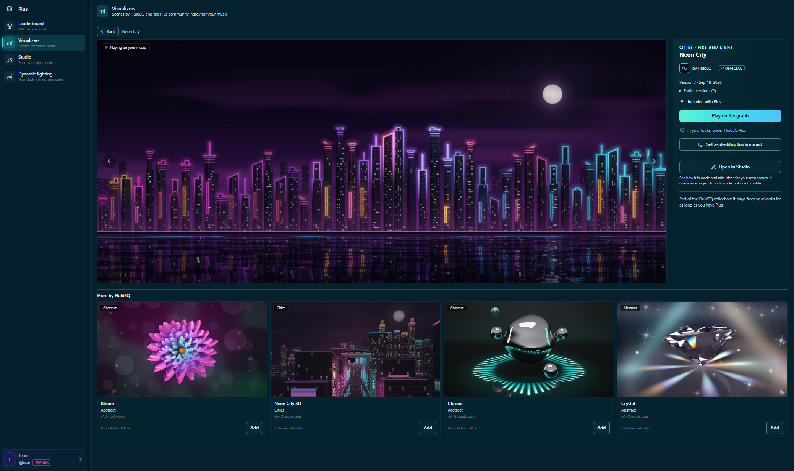
- 1Play on the graphPlays the scene on the graph. A scene you do not have yet offers Get, for one credit.
- 2Set as desktop backgroundPuts the scene behind your desktop icons.
- 3Open in StudioOpens FluidEQ’s scene in the Studio to see how it is made.
- 4BackBack to the gallery, where you left it.
Try it
- Open Visualizers → Gallery. Search, sort by Most liked, This week or Newest, or pick a category.
- Open a scene and press Get to keep it with a credit, then Play on the graph. The arrows, or ← and →, step between scenes.
- Like the scenes you have with the heart, and report one that should not be there.
Make scenes in the Studio
The Studio turns a description into a visualizer. Your own AI assistant writes the scene in a project folder, and FluidEQ plays each version on your music the moment it is saved. The Studio is free for every account.

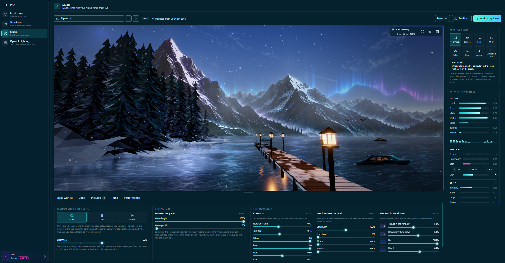
- 1ProjectYour projects, and FluidEQ scenes to look inside.
- 2StageThe scene, playing on your music. Double-click for full screen.
- 3FullscreenTries the scene full screen.
- 4Make with AIAsk Claude for a change in your own words. Each reply that changed the scene can bring that version back.
- 5Work on the sceneTune tries the wave and the scene’s own settings, Code shows its code as your AI saves it, Performance how it runs here, and What it hears now is open below.
- 6Preview audioTest signals that drive only this preview.
- 7What it hears nowWhat the scene receives: level, beat, bass, mids, treble.
Try it
- Open Visualizers → Studio and press New project…. Give it a name; FluidEQ makes its folder with a scene that already moves.
- Describe your idea, open the folder in your AI assistant, and paste the prompt from Copy AI prompt.
- Or type what should change in the chat beside the stage: Claude Code on this computer, signed in with your own plan, edits the scene and plays each version. Every reply keeps its version, with Bring back.
- Watch the stage as files are saved and try the test signals. Then Add to my looks, Publish… or Export….
The desktop visualizer
The desktop visualizer puts a scene behind your desktop icons, on one monitor or on each of them, for as long as FluidEQ runs.

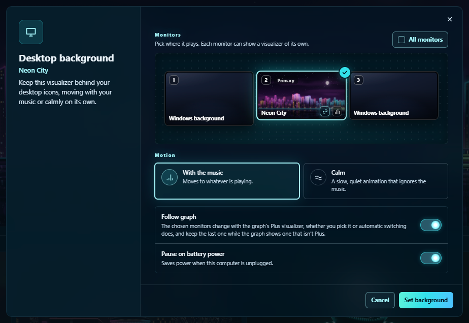
- 1MonitorsYour monitors as Windows arranges them. Press the ones to use.
- 2With the musicMoves to whatever is playing.
- 3CalmA slow, quiet animation that ignores the music.
- 4Follow graphChanges with the scene on the graph, whether you pick it or automatic switching does.
- 5Pause on battery powerSaves power while the computer is unplugged.
- 6Set backgroundStarts it on the monitors you chose.
Try it
- Put a scene on the graph and press the monitor button beside its name, or choose View → Set as desktop background.
- Press the monitors on the map, choose With the music or Calm, and press Set background.
- To change or stop it, open Visualizers → Gallery and use Manage or Stop at the top.
Dynamic lighting (beta)
Dynamic lighting lights your keyboard, mouse, mousepad, headset and stand with the scene on the graph, through Windows Dynamic Lighting and Razer Chroma. It is in beta, so tell us how your devices behave.

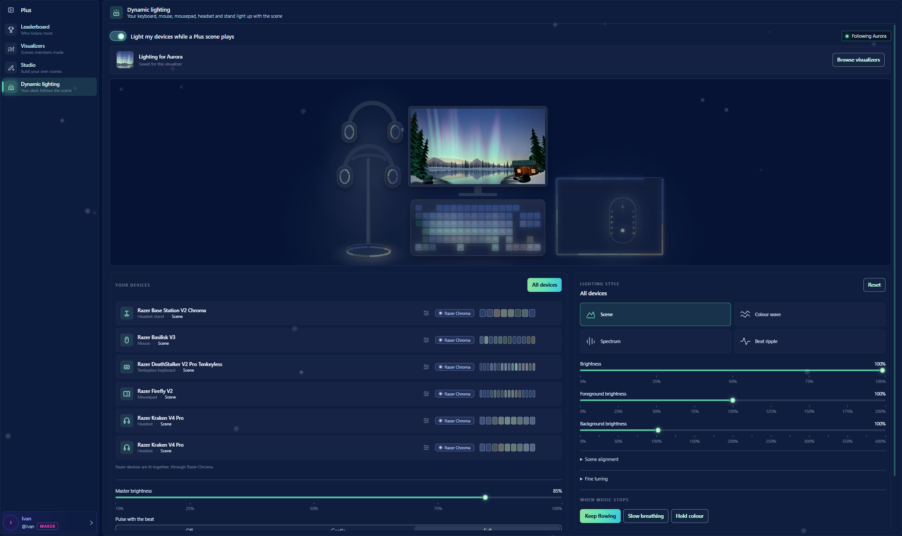
- 1Light my devices while a scene playsLights your devices while a scene plays.
- 2Browse visualizersOpens the gallery to choose a visualizer.
- 3Live desk previewYour own desk, lit with the colours sent to it.
- 1Your devicesEvery device found. Click one to tune it alone; All devices, above the list, tunes them all at once again.
- 2Lighting styleScene, Colour wave, Spectrum or Beat ripple, kept for each visualizer.
Try it
- Open Visualizers → Dynamic lighting and switch it on, or press the lighting button beside a scene on the graph.
- Choose this scene’s lighting style — Scene, Colour wave, Spectrum or Beat ripple — and set its brightness and what it responds to.
- Click a device under Your devices to tune it alone; All devices goes back to every device.
Listen with Online Media
Online Media keeps supported sites beside your EQ. Site playback and sign-in still depend on the provider and your connection. The bar at the foot of FluidEQ follows the active player, and its volume is your computer’s own.

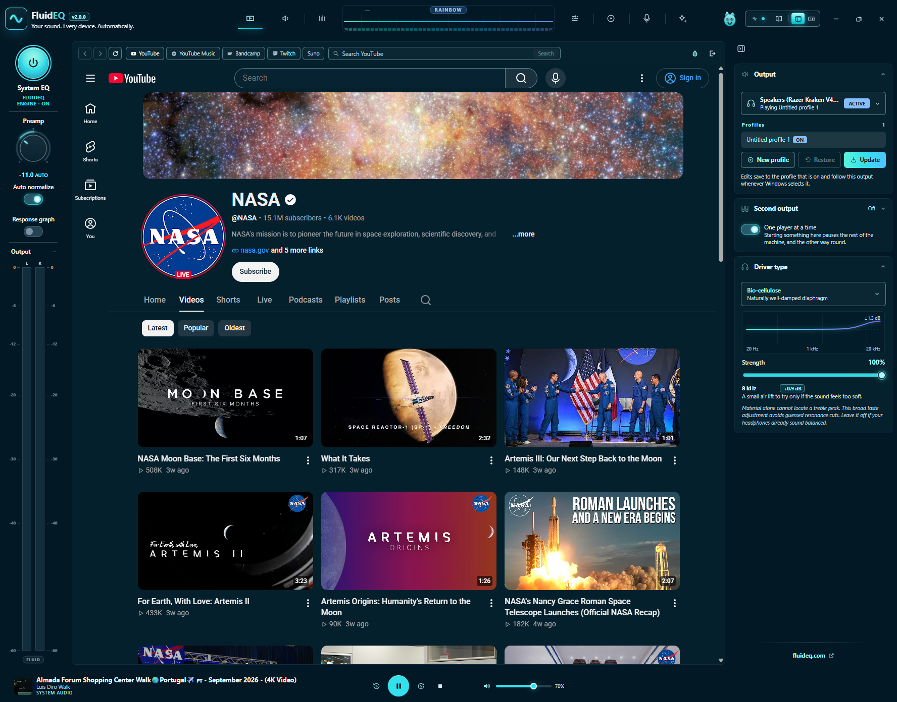
Try it
- Open Online Media and choose a supported site. Find and start something on that page.
- Switch to EQ to tune while listening, then return to the page when you need its own controls.
- Use One player at a time if you want FluidEQ and other players to pause one another instead of overlapping.
Build your local library
Library brings together music and video from your drives. Browse by albums, artists, genres, songs, folders, a folder tree or your playlists. Album art and details come from your files, so the same collection may look different depending on its tags.

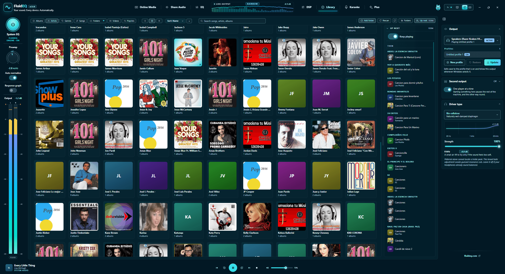
Try it
- Open Library and add the folder containing your media. Let the scan finish before judging what is missing.
- Choose an artist or album, or search for a song. Start a track from the results.
- Use the bar at the foot of the window to pause, seek and skip. Its volume is your computer’s own, the same as in Windows.
Albums & your play queue
The queue is the listening order; browsing is where you choose music. Opening another album lets you explore without making it the current song. The active track and Up next help you keep your place.

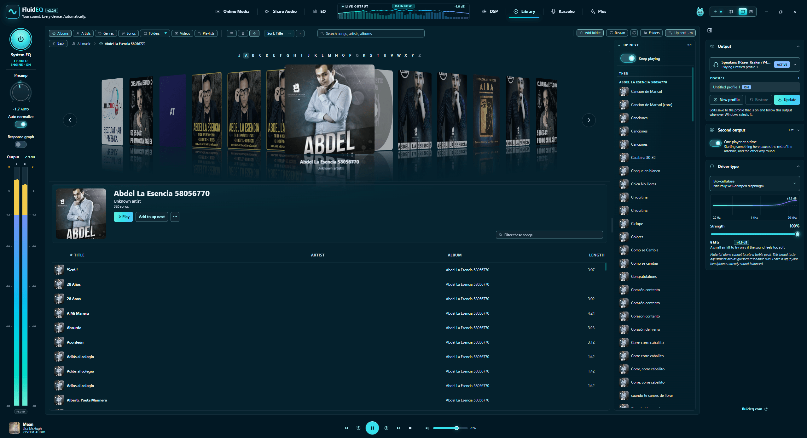
Try it
- Open an album to inspect its tracks. Start the one you want to hear.
- Right-click a song for Add to up next, Add to Favourites or Add to playlist.
- Open Up next to see what plays after, and turn on Keep playing to continue with more of the same genre.
Sing with Karaoke
Karaoke pairs your own audio with lyrics. Timed lyrics follow playback; pitch targets depend on the song’s note data. A microphone adds your live pitch when configured, and the stage can fill the screen.

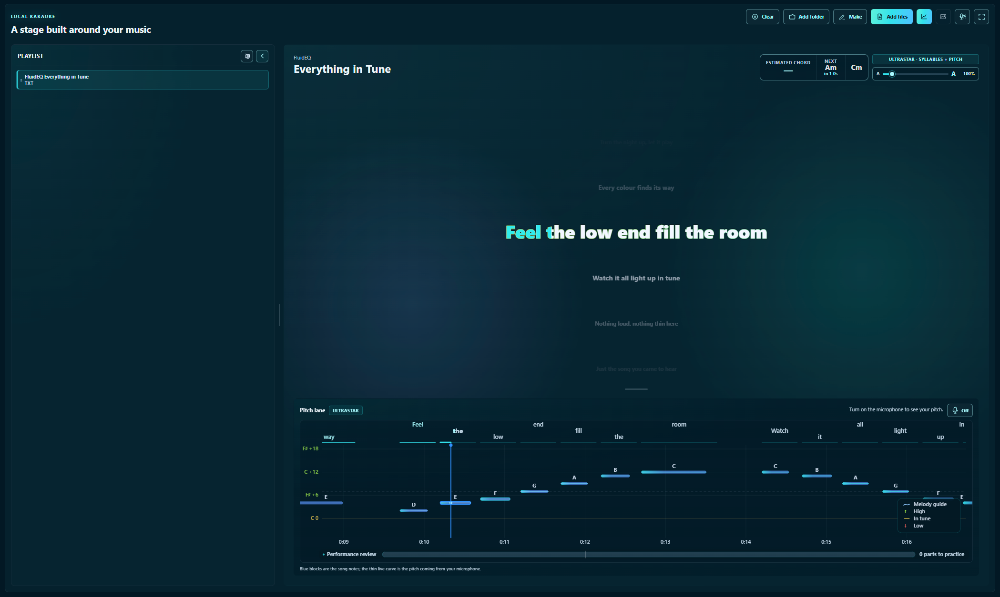
Try it
- Open Karaoke. Use Add files or Add folder to bring in audio and matching lyric files.
- Choose a song and start playback. Check that the correct lyrics and backing track are paired.
- Configure microphone input for live pitch, adjust lyric size for your viewing distance, and use the stage’s fullscreen control to sing.
Create in Karaoke Maker
Maker turns your audio into an editable karaoke project. Its timeline brings together audio, lyrics and pitch notes. Automatic results are a starting point: check words, timing and notes against the recording.

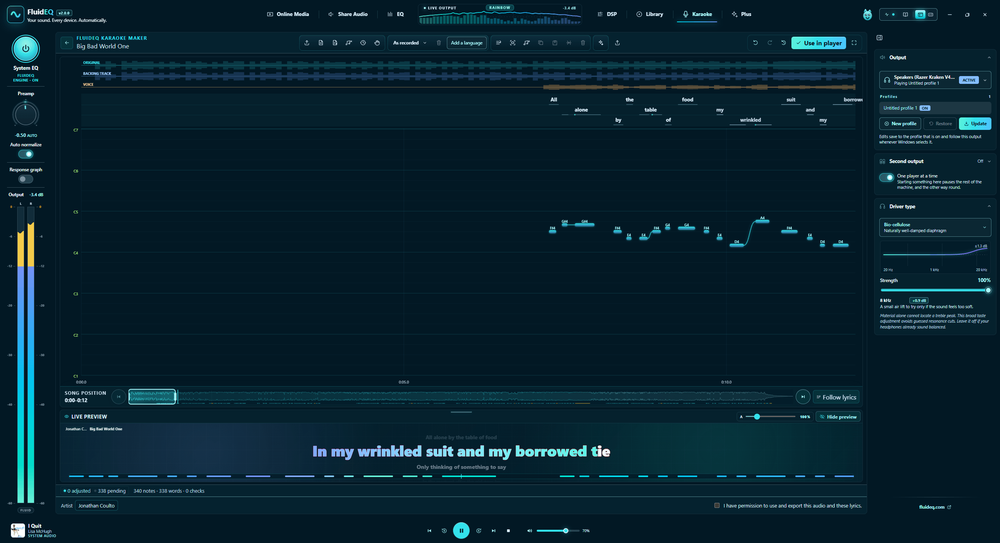
The tools along the top of the maker
- 1Import karaokeOpens a karaoke file or a saved project, and keeps the audio already loaded.
- 2LyricsThe words and their timing, in one window.
- 3Lyrics timingMoves the words and notes together, for a song that runs early or late from the first second.
- 4Hand · pan timelineDrag anywhere on the timeline to travel through the song without changing anything.
- 5Lyrics languageWhich language the words are in, and a second one beside it so the song can be sung in either.
- 6Record line entriesPlay the song and press a key as each line starts and ends. The timing comes from your presses.
- 7Select notesDraw a box around notes to move or delete them as one.
- 8Paint notesDraw the melody straight onto the pitch grid.
- 9SplitCuts a word into syllables, so a long word can carry a note on each one.
- 10Repair toolsThe tools that listen for you, and the models they need.
- 11ExportWrites the finished karaoke out as a FluidEQ project, UltraStar TXT, LRC or enhanced LRC.
The words, and when each one is sung
- 1Reference lyricsThe whole song as text, one line per row. Paste it or load a file; FluidEQ finds the timing from it.
- 2Word timingEvery word, in order, with how many are timed so far. Press one to work on it.
- 3Selected wordWhere the chosen word starts and how long it lasts. Moving its edge gives or takes time from the word beside it; the line keeps its length.
The AI tools, and the models they need
- 1Separate voice from musicSplits the recording into voice and music, so the karaoke can play without the singer.
- 2Load vocal-only trackUse a vocal-only file you already have, instead of separating one here.
- 3Re-detect lyric timingListens to the voice again and re-times the words you already have.
- 4Re-detect melody notesListens again for the melody and rewrites the notes under the words.
- 5AI model memoryWhat each model needs and whether it is on this computer. They are downloaded the first time you use one.
- 6When it is idleWhether a model stays in memory between uses, and for how long. Releasing it frees memory; keeping it makes the next run start at once.
Try it
- Open Make from Karaoke and load the source audio. Choose the available separation or transcription tools you need.
- Watch progress; first use of an AI tool may require a model download. Review the resulting lyrics and notes in the timeline.
- Play short passages, correct the timing and text, save the project for later editing, then export the karaoke files.

When something sounds wrong
Start with the source and output, then isolate the layer. A graph, a saved preset or an enabled switch alone cannot prove that sound reached the intended device. The Help menu also leads to audio troubleshooting, problem reporting and the Forum.
Try it
- No sound: confirm playback is running, the expected output is selected, volume is up, and the device is connected. Check whether One player at a time paused another source.
- No EQ change: confirm System EQ is on and the output shows no OFF badge; press Enable if it does. If a notice says the engine is not running, press Restart Windows audio.
- Everything looks right and the EQ still does nothing: Windows may be playing the music past the engine. The notice says so and offers one press to move the engine somewhere Windows will use; it costs a permission prompt and a second of silence.
- Distortion or excessive bass: leave Auto normalize on, reduce boosts and bypass layers one at a time. If it persists, use Report a problem and review the report before sending.
Ask in the Forum
The Forum brings FluidEQ’s GitHub Discussions into the app: announcements, ideas, questions and tunings people are proud of. Anyone can read; posting uses your GitHub account, not a FluidEQ one.

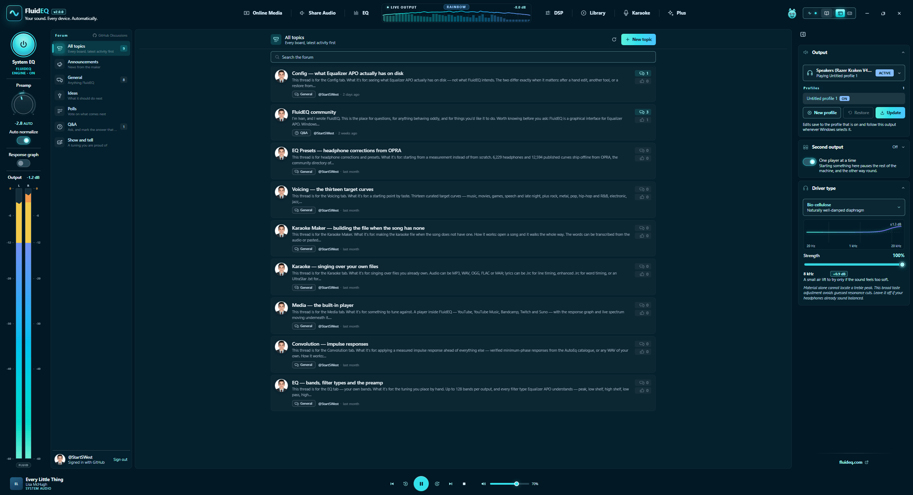
Try it
- Open Help → Forum and pick a board: Announcements, General, Ideas, Polls, Q&A or Show and tell. New for you gathers what came in since you last looked, and Issues lists the problems reported on GitHub.
- Search the forum, or open a topic to read the replies.
- Press Sign in with GitHub, finish in your browser, then post a New topic or a reply.